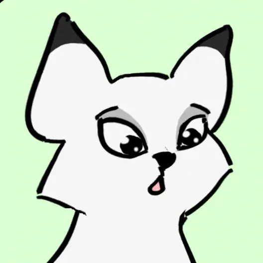
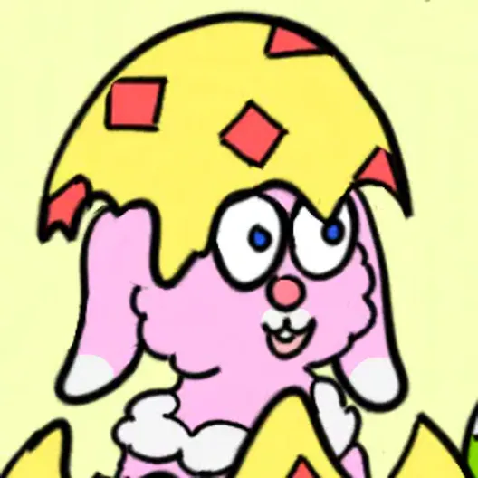
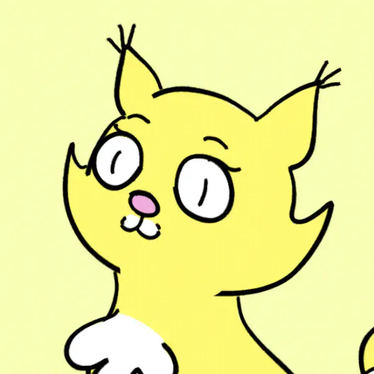
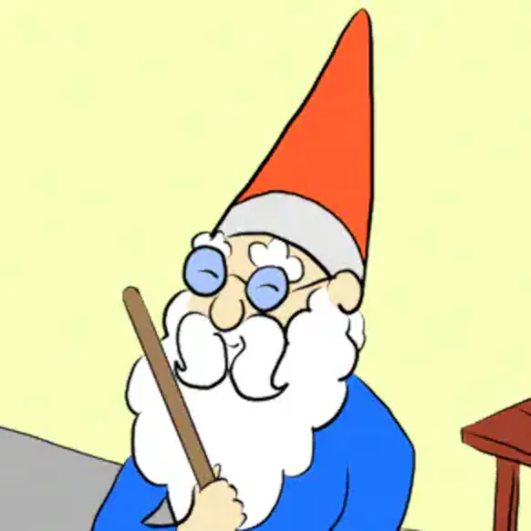
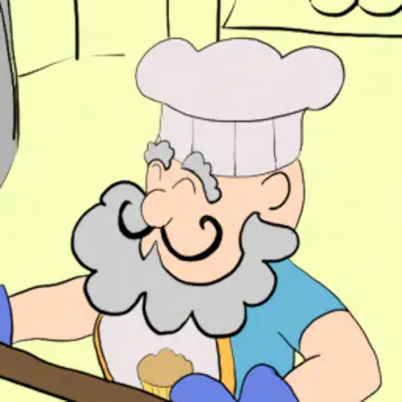
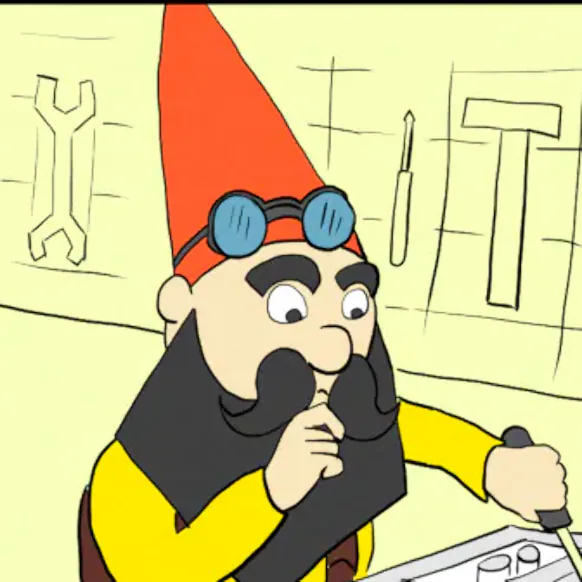

SERAFIMZ

FLUFF
Fluff is a serious and very orderly little Celestimal and the first to appear in the comics. She represents order, seriousness, responsibility and peace. She has a natural curiosity for things related to knowledge and like the rest loves to play.

BUN
Bun is a mischievous but very endearing little Celestimal. She adores to play and tease and represents fun, ambition, mischief and friendship. She loves solving problems and learning new things.

CAKE
Cake is a curious and very caring little Celestimal. She represents curiosity, care, creativity and adventure. She loves helping others and going on adventures.
GNOMES

BEARDY
The leader of the gnomes and the decision maker in the gnome village. He is very calm and grandfatherly, always eager to help. His calm behaviour easily tolerates the antics of the Serafimz and is never quick to judgement. His wisdom is great and he always knows better.

MITTENS
The gnome baker and the main food maker in the village. He has a quite jolly personality and loves preparing baked goods to everyone. His pretzels are legendary to all Cozy Realm inhabitants. Running his bakery is his favourite hobby.

Tinkerhat
The mechanic, inventor, developer. The master of all tech trades. His curiosity knows no ends and he invents everything. Even things that have no real practical use in the Cozy Realm. If there is a device somewhere, he made it. He loves getting feedback from all who use his creations. His house is his workshop and it might be cluttered during the day, but he loves putting all back into its place in the evening.